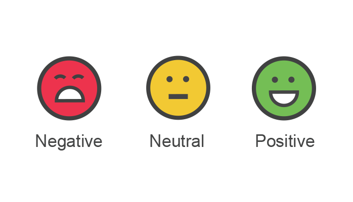

|
KyoungJin Oh
I am an undergraduate student in Computer Science and Engineering at
Yonsei University. Currently, I am a research intern at
the KAIST Computer Vision Lab (CVLAB), where I contribute
to the image and video restoration team. |

|
Research InterestsI have a broad interest in various fields of Computer Vision. Currently, as a member of the restoration team, I have been conducting research in this area. Recently, I studied Text-Aware Image Restoration (TAIR), a new task focused on restoring both visual quality and text fidelity in degraded images. Building on this, I am currently studying video restoration using optical flow. In the future, I plan to delve into diffusion guidance. |
Research ExperienceCVLAB, KAISTJun 2025 – Present
CIPLAB, YonseiJan 2025 – Mar 2025
|
EducationYonsei University
|
Honors & AwardsHigh Honors: Top 3%; Honors: Top 10% of the cohort
|
Course Projects |
|
|
Image Denoising
CAS3116 Computer Vision, 2025 project page I implemented image filters in both the spatial and frequency domains to restore noisy images. I manually built spatial filters like Gaussian and Laplacian via convolution, and also implemented frequency filters using Fourier transforms, ultimately synthesizing these techniques for practical image denoising. |
|

|
PCA-based Face Recognition
CAS3116 Computer Vision, 2025 project page I used PCA with SVD to extract Eigenfaces (principal components) for Face Recognition. The required number of components was determined by a cumulative variance threshold. Face images were reconstructed by projecting them onto the PCA basis. Final classification utilized the nearest neighbor algorithm to match test images in the PCA space via Euclidean distance. |

|
Homography Estimation and Image Stitching
CAS3116 Computer Vision, 2025 project page Homography matrix H was estimated from correspondence points by applying SVD to Matrix A. RANSAC was used for robust estimation to maximize inliers (points within an error threshold). Using more correspondences increased the method's robustness. The main limitation is the violation of the planarity assumption in 3D scenes, which causes artifacts due to parallax. |
|  |
Sentiment Classification in Korean using NLLB and ROBERTA
AAI3201 Theory & Practice of Deep Learning, 2024 project page This project proposed a method for Sentiment Classification of Korean sentences by sequentially using the NLLB-200-3.3B (NLLB) model to translate Korean into English and the English sentiment analysis model, twitter-roberta-base-sentiment-latest (ROBERTa). The proposed model achieved an Accuracy of 0.7859, demonstrating better performance than the comparison model, bert-base-cased-Korean-sentiment, which scored 0.7247. |
Extracurricular Activities |
|
|
UNID-THON Management
Apr 2023 – Nov 2023 As the Vice President of Uni-D, I planned and executed key aspects of Uni-DTHON—a hackathon and datathon competition organized by Uni-D, an organization formed by the student councils of various university computer science departments—which included theme development, data curation, and venue selection. |
|
|
Student Council
Mar 2023 – Dec 2023 As the President of the Student Council for the Department of Computer Science and Engineering, I managed and administered various department events. Furthermore, I effectively collaborated with diverse individuals, building effective relationships throughout this role. |
|
|
FC Yonsei Soccer Club
Mar 2022 – Present I competed in events such as K7, SUFA, and the Yonsei University President’s Cup. Through participating in multiple matches, I developed teamwork skills. |
|
|
INSIDERS Startup Society
Mar 2022 – Aug 2022 I learned how to generate and develop business ideas in the entrepreneurial space through projects like international startup benchmarking, and contributed to a project aimed at developing a new 3D modeling tool program as an Minimum Viable Product (MVP). |
|
|
Using Jon Barron’s template. |